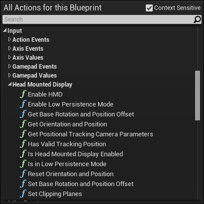

Oculus Rift Blueprint
Overview
Blueprint makes several functions available for use with the
or other head mounted display.
Find them under
Input > Head Mounted Display
.
Reference: \UnrealEngine\Engine\Source\Runtime\Engine\Classes\Kismet\HeadMountedDisplayFunctionLibrary.h
(Current as of version 4.7)

Methods
- Switches to and from using HMD and stereo rendering.
- Switches between Low and Full Persistence modes.
- Get Base Rotation and Position Offset
-
Returns the HMD's current base rotation and position offset. Add this to the camera position to get the actual world-space location of the camera.
- OutRot (out) Rotator object with base rotation
- OutPosOffset (out) the vector with previously set position offset.
-
Grabs the current orientation and position of the HMD. If positional tracking is not available, device position will be a zero vector.
- DeviceRotation (out) The device's current rotation
- DevicePosition (out) The device's current position, in its own tracking space
-
If the HMD has a positional tracking camera, this will return the game-world location of the camera, as well as the parameters for the bounding region of tracking. This allows an in-game representation of the legal positional tracking range. All values will be zeroed if the camera is not available or the HMD does not support it.
- CameraOrigin (out) Origin, in world-space, of the tracking camera
- CameraOrientation (out) Rotation, in world-space, of the tracking camera
- HFOV (out) Field-of-view, horizontal, in degrees, of the valid tracking zone of the camera
- VFOV (out) Field-of-view, vertical, in degrees, of the valid tracking zone of the camera
- CameraDistance (out) Nominal distance to camera, in world-space
- NearPlane (out) Near plane distance of the tracking volume, in world-space
- FarPlane (out) Far plane distance of the tracking volume, in world-space
- If the HMD supports positional tracking, returns whether or not the player is currently being tracked.
- Returns whether or not we are currently using the head mounted display.
- Returns true, if HMD is in low persistence mode. 'false' otherwise.
-
Resets orientation by setting roll and pitch to 0, assuming that current yaw is forward direction and assuming current position as a 'zero-point' (for positional tracking).
- Yaw (in) the desired yaw to be set after orientation reset.
- Options (in) specifies either position, orientation or both should be reset.
- Set Base Rotation and Position Offset
-
Sets 'base rotation' - the rotation that will be subtracted from the actual HMD orientation. The position offset might be added to current HMD position, effectively moving the virtual camera by the specified offset. The addition occurs after the HMD orientation and position are applied.
- BaseRot (in) Rotator object with base rotation
- PosOffset (in) the vector to be added to HMD position.
- Options (in) specifies either position, orientation or both should be set.
-
Sets near and far clipping planes (NCP and FCP) for stereo rendering. Similar to 'stereo ncp= fcp' console command, but NCP and FCP set by this call won't be saved in .ini file.
- NCP (in) Near clipping plane, in centimeters
- FCP (in) Far clipping plane, in centimeters